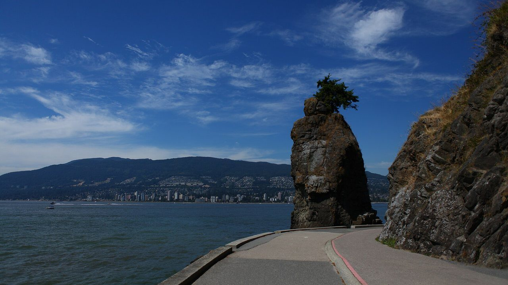

Race, Stanley Park Seawall

Behind
Best +0:01
371W
Target 418 W-47 W
- Cadence
- 87rpm
- Heart
- 140bpm
- Speed
- 26.5km/h
Work9 of 12
0:11
Next: · 2:00 at level 10
+2.6%
26 m climbed
4.48 km
22
Resistance / 32
Solo races your best-time ghost: position reads Ahead or Behind, and solo alone gets a Pause button. Frozen at 10:49.